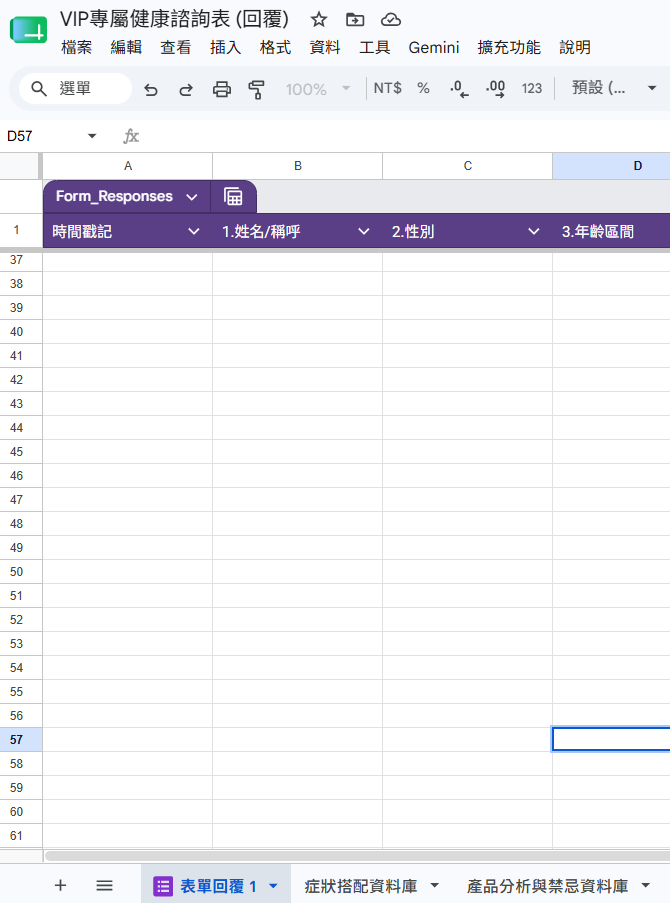

1. 資料庫2. 表單3. API4. 程式碼5. 觸發器6. 測試
第一關：複製「雙重資料庫」大腦
我們要先讓 AI 擁有參考的知識庫。我們已經為你將「症狀搭配」與「分析與禁忌」完整整合在同一個 Excel 試算表檔案中囉！
新手捷徑：點擊下方按鈕，直接將這份完整的【美安雙重資料庫】複製到你的 Google 雲端硬碟中！
一鍵複製【VIP專屬健康諮詢表】資料庫複製成功後，請確認你的試算表底部已包含以下兩個分頁：
- 第一個分頁名稱：症狀搭配資料庫
- 第二個分頁名稱：產品分析與禁忌資料庫
雲端硬碟試算表底部分頁正確對照圖：
